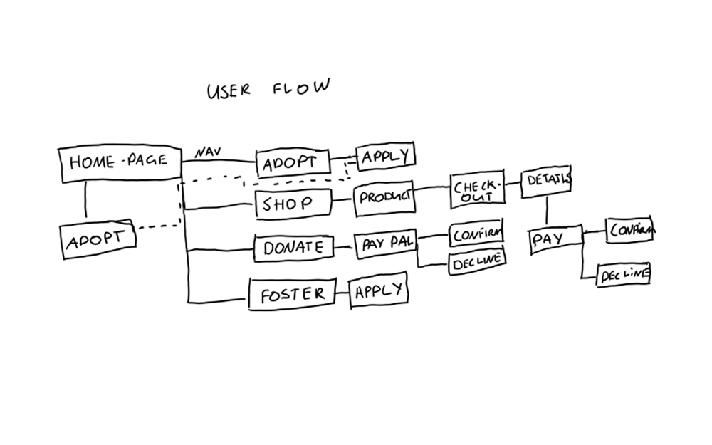
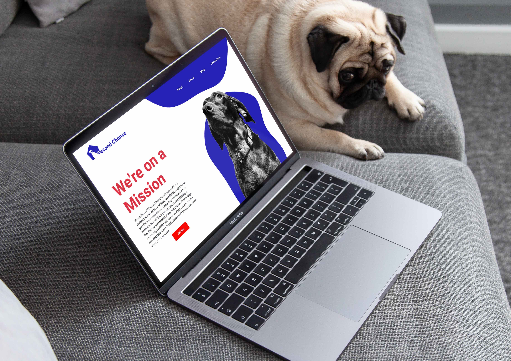

The Problem: All actions take place externally from the website.
User flows, client needs and prototypes were made to ensure a good experience for the client and user.

A cutsom wordpress theme was made from scratch using PHP, HTML, CSS and Javascript.


Client can now manage content online through WordPress without coding.
